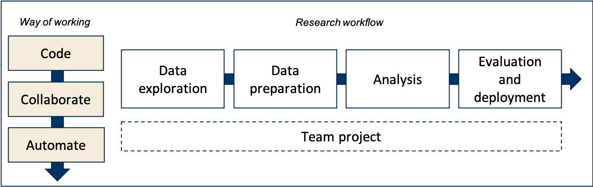

Data Preparation & Programming Skills (328059-M-6)
Syllabus
Course Description
Whether you’re an experienced academic or just starting with coding, small ad-hoc fixes only work for small projects. In a thesis, research project, or analytics role, you’ll face messy multi-source datasets, versioning challenges, and the need for reproducibility. This course — and the accompanying book Data Preparation & Programming Skills — shows you how to professionalise your way of working so your projects are structured, reproducible, and future-proof.
The increasing complexity of data (e.g., scraped from the Internet)1 and analytics (e.g., requiring high-performance computing) demands a novel way of working to efficiently manage empirical marketing research projects. In this course, you will:
1. Code – Develop your coding skills in R/RStudio.
2. Collaborate – Work together using Git/GitHub.
3. Automate – Build end-to-end, reproducible research pipelines.
These three principles — code–collaborate–automate — are applied across the full research workflow (data exploration, preparation, analysis, and reporting), with a special focus on engineering datasets from complex raw sources and disseminating findings in innovative formats (e.g., Markdown documents or apps).
Learning goals
After successful completion of this course, you will be able to:
- Use GitHub (or similar tools) for managing empirical research projects (e.g., Issues and Project Boards)
- Use Git/GitHub (or similar tools) for versioning files and collaborating on privately-shared and publicly-available (open science) code repositories
- Use R to clean and transform data for analysis (e.g., aggregation, merging, de-duplication, reshaping, data conversions, regular expressions)
- Use R for generating automatic reports (e.g., to assess data quality, to report research findings in a paper) and deploying research findings in novel ways (e.g., apps)
- Use Workflow Management Tools to create and run portable, automated, and reproducible data pipelines

Positioning of the course in the study program
The course is instructed to MSc students in the Marketing Analytics (TiSEM) program. Seats are also offered to interested Research Master and PhD students.
This course zooms in on ways to professionalize working on empirical research projects. Rather than focusing on one particular aspect of the research workflow (like collecting data or only conducting an analysis), this course connects all components of the research workflow. Along the way, students learn how to write better code (in R, especially concerning preparing complex data for analysis), collaborate in teams (using GitHub), and automate their research workflows (using the automation tool make).
Students are recommended to follow this course before embarking on thesis projects. Research Master and Ph.D. students are advised to take this course early on, as it will likely provide them with many tools that will help them conduct their research efficiently.
Interested Research Master or PhD students are encouraged to apply for a seat.
- Tilburg University students: Enrollment is possible with the approval of the instructor and your program coordinator. Please notify the course coordinator by 15 August 2025.
- External students: You are welcome to audit this course. For admission, email a brief research statement, your motivation for joining, and your CV by 15 August 2025.
Notification: Eligible candidates will be informed by 22 August 2025.
Prerequisites
- The course is instructed to MSc students in the Marketing Analytics (TiSEM) program.
- Preparation material is available, and students need to have acquired working knowledge in R before the start of the course. Novices may further benefit from following other courses at Tilburg University in which R is used.
- Students can use their own computer for the duration of this course (Windows, Mac, or Linux). Android/Chromebook/iOS devices are not supported. We recommend laptop with 16 GB+ of RAM as we work with larger data sets requiring preprocessing capacity. The exam is held on campus, using Windows computers. Mac and Linux users are advised to practice on the on-campus computers before the exam.
Teaching format
- Blended (a mix of online/offline lectures and tutorials, and online/offline coaching sessions)
- Combination of self-paced tutorials (e.g., using R Notebooks or pre-recorded clips), and interactive live streams for feedback and coaching
- Learn state-of-the-art tools popular among scientists, marketing analysts, and data scientists (e.g., R, GitHub,
make) - Open education & open science (all material is open; publicly accessible course page that stays with you, even after the end of the course)
Assessment
- Team project (40%, out of which 8% are based on students’ individual contribution, measured by self- and peer assessment.
- Computer exam (60%, 120 minutes)
Passing requirements
Students pass this course if - the final course grade (i.e., the weighted average of the following two components: (1) the group project, and (2) the exam; weights indicated above) is ≥ 5.5, and - the exam grade is higher than or equal to 5.0 (≥ 5.0).
Final course grades are rounded to multiples of half points (e.g., 6, 6.5, 7, etc.).
Resit policy
- If students have a grade lower than 5.0 on the exam, they cannot pass this course.
- Required action: Students will have to take the exam resit.
- If students are not part of a team, they cannot obtain a grade for the team project and hence cannot pass this course.
- Required action: Re-enroll in this course’s next edition, and ensure you are part of a team.
- If students have an exam grade higher or equal to 5.0 but fail the team project (after SPA correction), their total course grade may be lower than 5.5, and hence students fail this course.
- Required action: Correct team project based on the course coordinator’s grading report, and hand it in again within two weeks after publication of the final grades in this course (submission on Canvas). Only students who fail the team project can have their projects re-graded.
- Students who have passed the course, but wish to retake the exam, can take the exam resit. The last exam grade counts. Grades for the team project are retained. In other words, the resit exam still counts for 60% of the final course grade.
- Students who fail the exam and wish to re-take the course in the subsequent semester can retain their assignment grades.
Code of Conduct
- Please always use English as the default language so that non-Dutch speakers can follow the conversations, even if it concerns topics not directly related to the class (e.g., during breaks).
- Please head over the course’s support section to solve problems or get in touch with the instructor.
- Stay up-to-date by checking this website, Canvas, and watch out for updates on Hannes’ social media channels.
- Be on time, and start on time
- Feel invited to provide informal feedback!
- It’s totally fine calling the instructor by his first name.
- When meeting on Zoom, please turn on your camera, which will facilitate interaction with the course instructor and other students.
Instructor
This course is instructed by dr. Hannes Datta, Associate Professor at the Marketing Department of Tilburg University and Msc. Roshini Sudhaharan, Junior Lecturer at the Marketing Department of Tilburg Univeristy.
Join Hannes’ professional network on LinkedIn, subscribe to his YouTube Channel, and start following him on GitHub and Twitter to stay up-to-date!
Footnotes
For example, see the data sections in these papers: Building a user panel of music consumption from Spotify, Preparing a panel data set on electronics sales and marketing mix activities across thousands of brands.↩︎